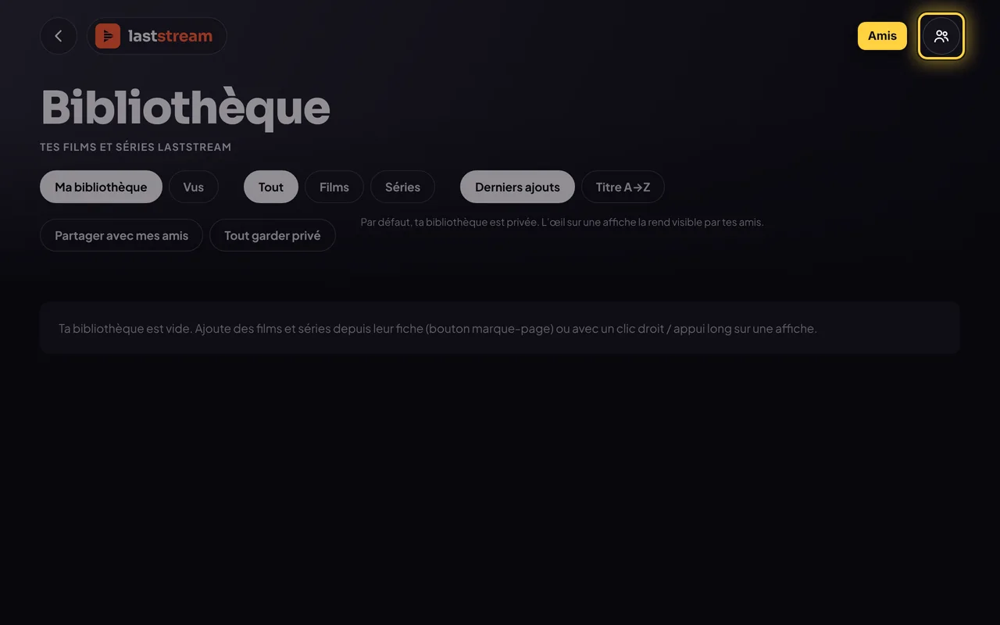
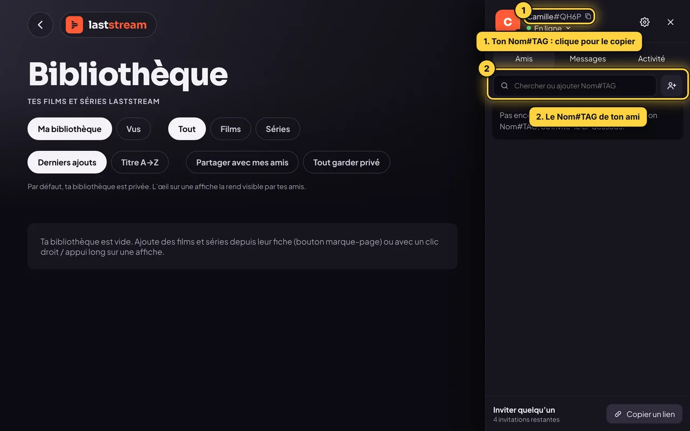
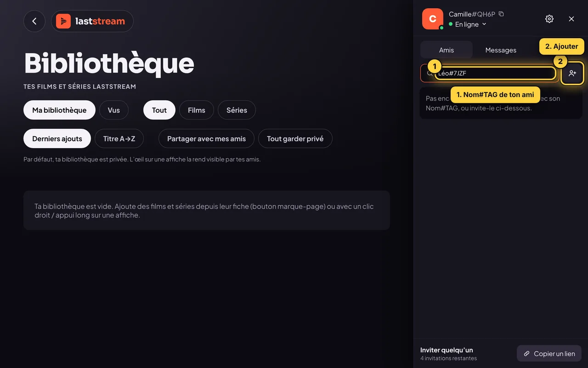
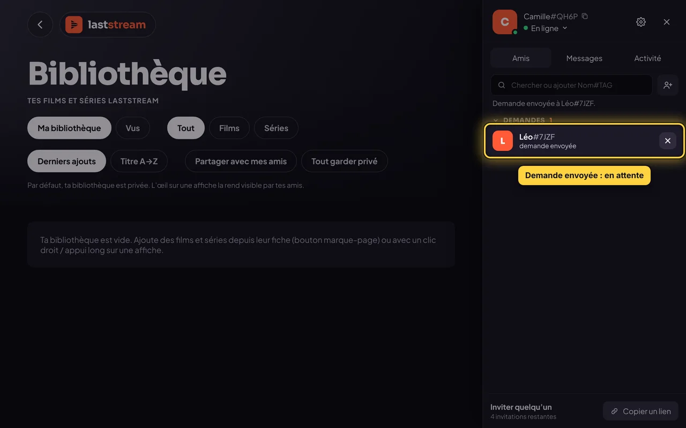
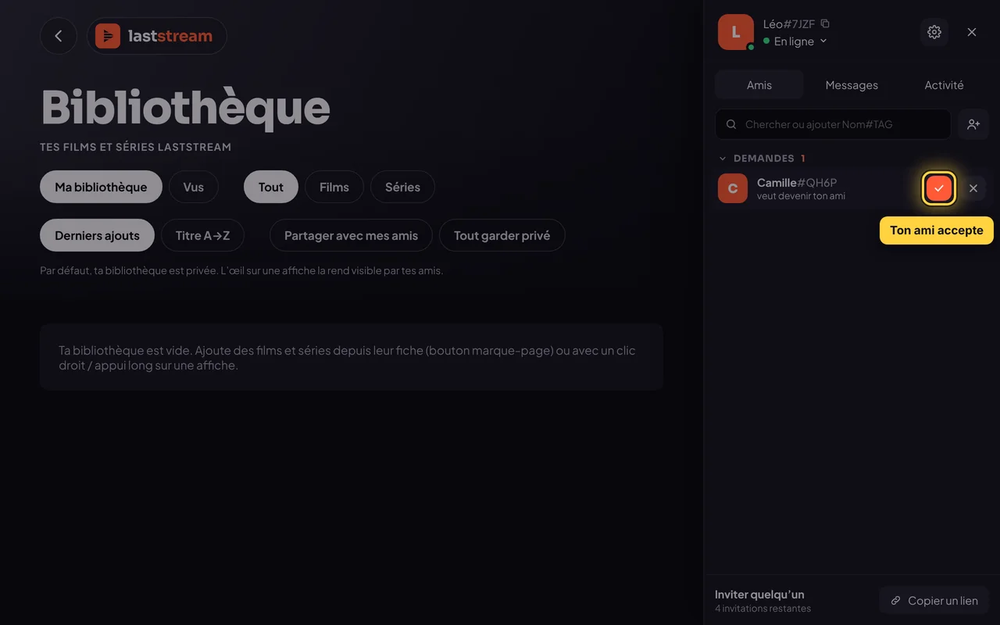
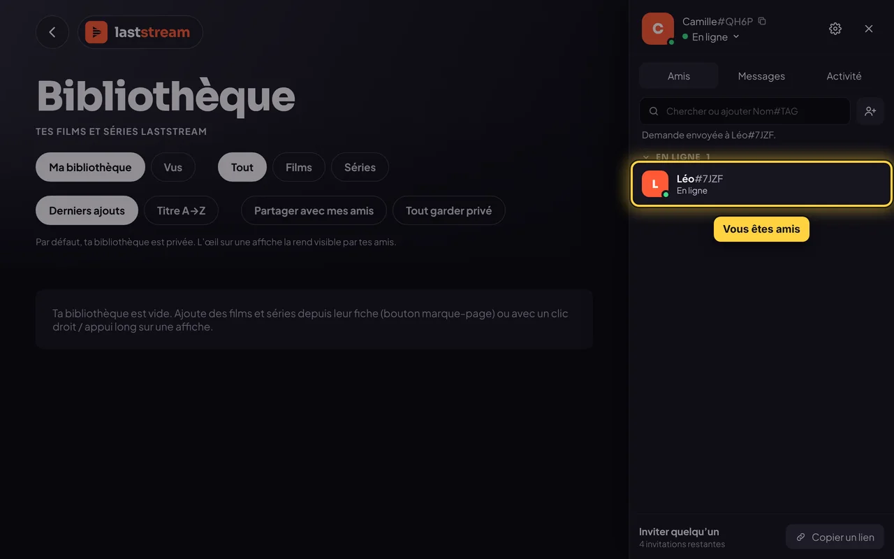

Prérequis
- Un compte connecté, sur un profil adulte.
- Le Nom#TAG de ton ami (il le trouve au même endroit).
Étapes
Sur chaque capture, le cadre jaune montre où toucher ou cliquer ; les numéros donnent l’ordre.
-
Touche le bouton « Amis » en haut à droite.

-
En haut du panneau, ton propre Nom#TAG (1) : touche-le pour le copier et l’envoyer à ton ami. Le champ en dessous (2) sert à ajouter le sien.

-
Saisis le Nom#TAG de ton ami, exactement, majuscules du tag comprises (1), puis touche le bouton d’ajout (2).

-
La demande apparaît dans « Demandes », « demande envoyée ».

-
De son côté, ton ami voit ta demande dans son panneau Amis et l’accepte avec la coche.

-
C’est fait : ton ami apparaît dans ta liste, avec son statut (« En ligne »…).
